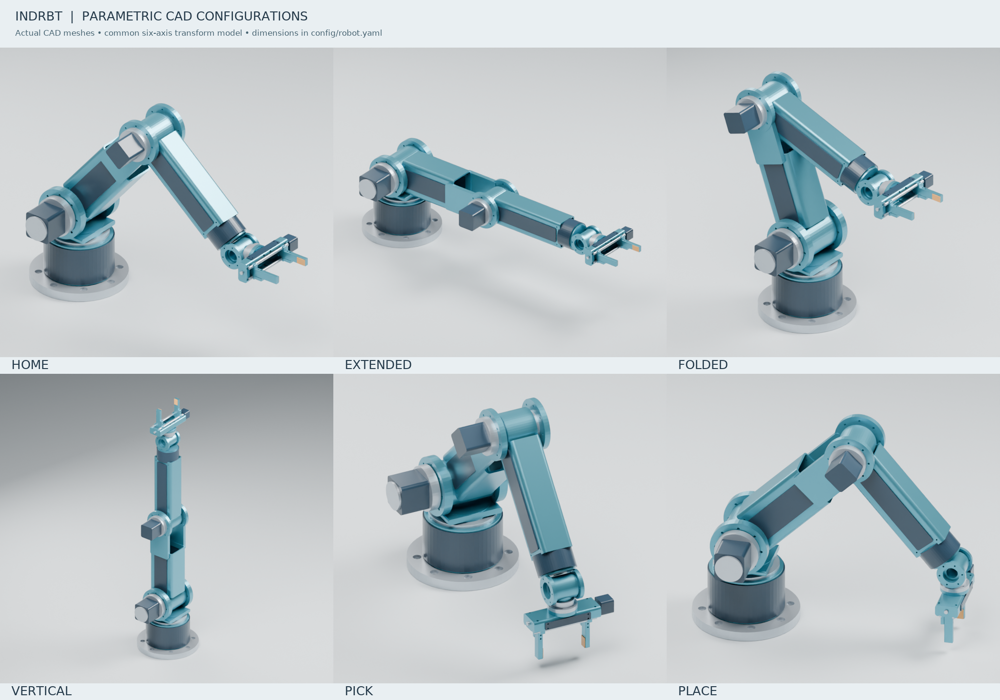

← Project homeINDRBT · Engineering and theory
Open the public design library — no CAD application or GitHub access required.
Public CAD and electronics downloads — four focused format packs and the combined offline viewer/CAD pack. The native-file guide explains format differences and application-opening instructions. The repository and release are public. The published GitHub Pages showcase includes the browser viewers and download controls.
Understand the design. Follow the evidence. Reproduce the results.
INDRBT is an original six-axis digital robot with a parallel-jaw gripper. This library connects its CAD, mathematics, motion, load calculations, feedback control and conceptual electronics. The design's 790 mm reach is calculated; 4 kg payload and ±0.1 mm repeatability remain targets. No physical robot was built.
Project home · Engineering walkthrough · Full theory guide · Engineering report

Start with one connected story
- Purpose and original goals — what the project sets out to demonstrate and how its parts connect.
- How INDRBT works — a visual introduction following one task from geometry to electronics; each plot explains what its evidence means.
- Understanding the theory — units, transforms, IK, Jacobian, planning, loads, gripper work balance and control, with equations and interpretation.
- Engineering report — the complete design argument, results, research findings and stated limitations.
- Validation matrix — trace each requirement to an executed check, then inspect the recorded validation.
Find a subject
| Subject |
Read first |
Inspect the actual work |
| Purpose and requirements |
Project alignment, requirements |
Central SI parameters, scope audit |
| System architecture |
Architecture |
Control/data-flow diagram, electronics diagram |
| Mechanical design and CAD |
CAD methodology and reproduction, component catalog |
Dimensioned interfaces, CAD source, STEP files |
| Frames, FK, IK and Jacobian |
Kinematic formulation |
Kinematics source, numerical verification |
| Workspace and singularities |
Walkthrough: kinematics |
Workspace plots/data, sampling metrics |
| Trajectories and pick/place |
Walkthrough: useful motion |
Planner, task code, motion results |
| Loads, structure and drives |
Mechanical analysis |
Calculation source, mechanical results |
| Gripper force and travel |
Gripper mechanism |
Gripper source, finger-length plot |
| PID feedback |
Walkthrough: control |
PID source, response/error plots, gain study |
| Electronics and PCB |
Electronics chapter, component/BOM guide |
Schematic PDF, PCB layers PDF, native project |
| Numerical research |
Research discussion |
Five parameter sweeps and plots, experiment source |
| Verification and reproducibility |
Validation matrix, project setup |
Tests, executed checks, isolated package evidence |
Browse the evidence visually
Open the interactive robot online for browser inspection, joint controls and playback without downloading files. The project download and launch instructions describe optional offline viewing and native CAD/KiCad editing. GitHub also previews images, Markdown and PDFs; its repository HTML links show source rather than executing the viewer.
Read the claims with their evidence class
| Label |
Meaning here |
| TARGET |
Desired performance, including payload and repeatability; no physical measurement. |
| ASSUMED |
Chosen model input, such as material properties, lumped masses, friction or controller inertia. |
| CALCULATED |
An equation evaluated with stated inputs and simplifications. |
| SIMULATED |
Output of a numerical model, such as task motion or PID tracking. |
| VERIFIED DIGITALLY |
An executed test or native application check within its recorded rules and scope. |
The KPI table supplies values and their evidence classes. The scope audit explains why analytical beams, simplified PID plants, representative collision screening and conceptual electronics satisfy this digital brief, while physical performance remains unverified.
Review the engineering process
Design decisions record choices and tradeoffs. The project journal records actual iterations and corrections. The final review, completion checklist and release notes describe the resulting project. The environment report records the toolchain used during development.